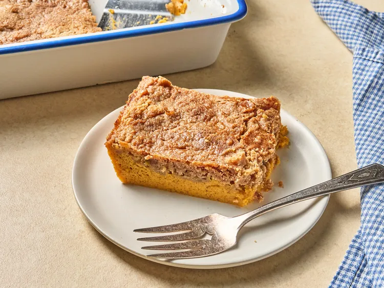

Description
This pumpkin pie dump cake is like a pumpkin pie topped with buttery, crunchy cake. Using spice cake mix for the topping, it's extra easy, with minimal measuring.
Ingredients
- cooking spray
- 1 (14.5 ounce) can pure pumpkin puree
- 1 (12 ounce) can evaporated milk
- 3 large eggs
- 1 cup white sugar
- 1 teaspoon ground cinnamon
- 1 (15 ounce) package spice cake mix
- 1 cup butter, melted
Steps
- Preheat the oven to 350 degrees F (180 degrees C). Lightly grease the sides of a 9x13-inch baking dish with cooking spray.
- Add pumpkin puree, evaporated mik, eggs, sugar, and cinnamon to a large mixing bowl and whisk to combine. Mixture should be runny.
- Pour the mixture into the prepared baking dish. Carefully sprinkle an even layer of cake mix on top of pumpkin mixture. Pour melted butter evenly over cake mix.
- Bake in the preheated oven until only a slight jiggle remains at the center of the cake, 50 to 60 minutes. Allow the cake to cool at least 1 hour to set. Serve or refrigerate until ready to serve.
:max_bytes(150000):strip_icc():format(webp)/ar-26060-pumpkin-dump-cake-ddmfs-hero_7725-44d3a5db47ec41cb883d3d7c8a8b88c2.jpg)